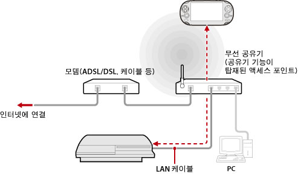

네트워크 > 리모트 플레이하기(액세스 포인트 경유)
리모트 플레이하기(액세스 포인트 경유)
PS3™를 LAN 케이블로 액세스 포인트에 연결한 후 PS Vita 및 PSP™ 등 리모트 플레이 대응 기기의 무선랜 기능으로 액세스 포인트를 경유하여 PS3™에 접속합니다.
일반적인 구성의 예

알아두기
- 무선 공유기는 액세스 포인트에 공유기 기능이 탑재된 기기입니다. 액세스 포인트는 무선으로 네트워크에 접속하기 위한 장치입니다. 공유기는 하나의 인터넷 회선을 복수의 기기에서 공유하기 위한 장치입니다.
- 모뎀에 공유기 기능이 탑재되어 있는 경우가 있습니다. PS3™는 공유기 기능이 탑재되어 있는 기기에 연결해 주십시오.
- 액세스 포인트와 모뎀 양쪽에 공유기 기능이 탑재된 경우 한 쪽의 공유기 기능을 꺼 주십시오. PS3™와 리모트 플레이 대응 기기는 동일한 네트워크에 접속되어야 합니다. 두 대 이상의 공유기를 동시에 사용하면 PS3™와 리모트 플레이 대응 기기가 별개의 네트워크에 접속되어 리모트 플레이를 할 수 없는 경우가 있습니다.
준비하기(PS3™ 및 리모트 플레이 대응 기기)
처음 리모트 플레이를 사용할 때는 PS Vita 및 PSP™ 등 리모트 플레이 대응 기기를 PS3™에 등록(페어링)해야 합니다.  (설정) >
(설정) >  (리모트 플레이 설정) > [기기 등록]에서 설정해 주십시오.
(리모트 플레이 설정) > [기기 등록]에서 설정해 주십시오.
준비하기(리모트 플레이 대응 기기)
PS Vita 및 PSP™ 등 리모트 플레이 대응 기기를 액세스 포인트에 접속하기 위한 네트워크 접속을 만듭니다. 리모트 플레이를 할 때, 이미 이용하고 있는 액세스 포인트를 경유하는 경우에는 새 네트워크 접속을 만들 필요는 없습니다. 리모트 플레이 대응 기기에서의 네트워크 접속 새로 만들기에 대한 상세한 사항은 각 기기의 사용자 가이드를 참조해 주십시오.
PS Vita로 리모트 플레이하기
1. |
PS Vita에서 |
|---|
 (PS3 리모트 플레이) > [시작]을 탭합니다.
(PS3 리모트 플레이) > [시작]을 탭합니다.2. |
PS3™에서 |
|---|
 (네트워크) >
(네트워크) >  (리모트 플레이)를 선택합니다.
(리모트 플레이)를 선택합니다.3. |
PS Vita에서 [가정 내에서 접속하기]를 탭합니다. |
|---|
PSP™로 리모트 플레이하기
1. |
PS3™의 |
|---|---|
2. |
PSP™의 |
3. |
[가정 내에서 접속하기]를 선택합니다. |
4. |
접속대상 목록에서 리모트 플레이에 사용할 액세스 포인트의 접속명을 선택합니다. |
 (리모트 플레이)를 선택합니다.
(리모트 플레이)를 선택합니다.알아두기
- 리모트 플레이는 PS3™가 전파를 수신할 수 있는 범위 내에서 사용할 수 있습니다.
- PS3™의 리모트 기동을 활성화하면 리모트 플레이를 할 때 대기중인 PS3™의 전원을 자동으로 켤 수 있습니다(Wake On LAN). 상세한 사항은 (설정) > (리모트 플레이 설정) > [리모트 기동]을 참조해 주십시오.
- PS Vita의 리모트 플레이 중에 다른 애플리케이션으로 이동하여 30초 이상 경과하면 리모트 플레이 접속이 끊깁니다.